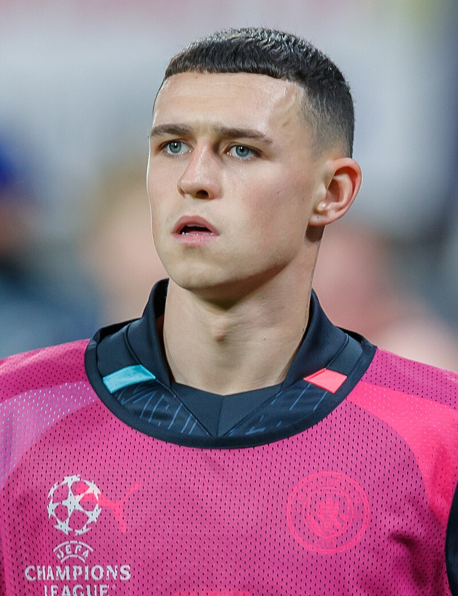
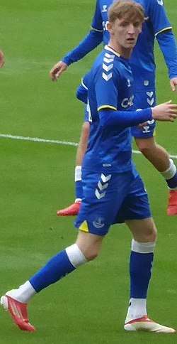

| Nombre | Posición | Edad | Bibliografía | Portada |
|---|---|---|---|---|
| Trent Alexander-Arnold | Lateral derecho | 25 | Lateral del Real Madrid, conocido por sus centros precisos y visión ofensiva desde la banda derecha. |
|
| Jude Bellingham | Centrocampista | 21 | Mediocampista del Real Madrid, joven estrella inglesa con gran capacidad de recuperación y pase. |
|
| Phil Foden | Centrocampista ofensivo | 23 | Jugador del Manchester City, destaca por creatividad, regate y llegada al área rival. |
 |
| Jack Gordo | Centrocampista | 22 | Mediocampista joven con gran resistencia y habilidad para conectar el ataque y la defensa. |
 |
| Marc Guéhi | Defensa central | 24 | Defensor del Crystal Palace, sólido en marca y juego aéreo. |
|
| Harry Kane | Delantero | 30 | Delantero del Bayern Múnich, máximo goleador histórico de Inglaterra y líder en ataque. |
|
| Cole Palmer | Centrocampista ofensivo | 21 | Jugador del Chelsea, habilidoso en ataque y convocado regularmente por Inglaterra. |
|
| Jordan Pickford | Portero | 30 | Arquero del Everton, titular indiscutido de la selección inglesa por sus reflejos y liderazgo. |
|
| Declan Rice | Centrocampista defensivo | 25 | Mediocampista del Arsenal, clave en la recuperación y equilibrio del mediocampo inglés. |
|
| Bukayo Saka | Extremo | 22 | Extremo del Arsenal, destaca por velocidad, regate y versatilidad en ataque. |
|
| John Stones | Defensa central | 29 | Defensa del Manchester City, reconocido por su lectura de juego y salida de balón. |
|
| Ollie Watkins | Delantero | 26 | Delantero del Aston Villa, convocado a la selección inglesa por su movilidad y capacidad goleadora. |